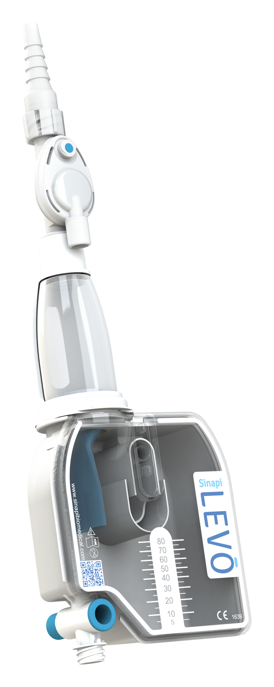
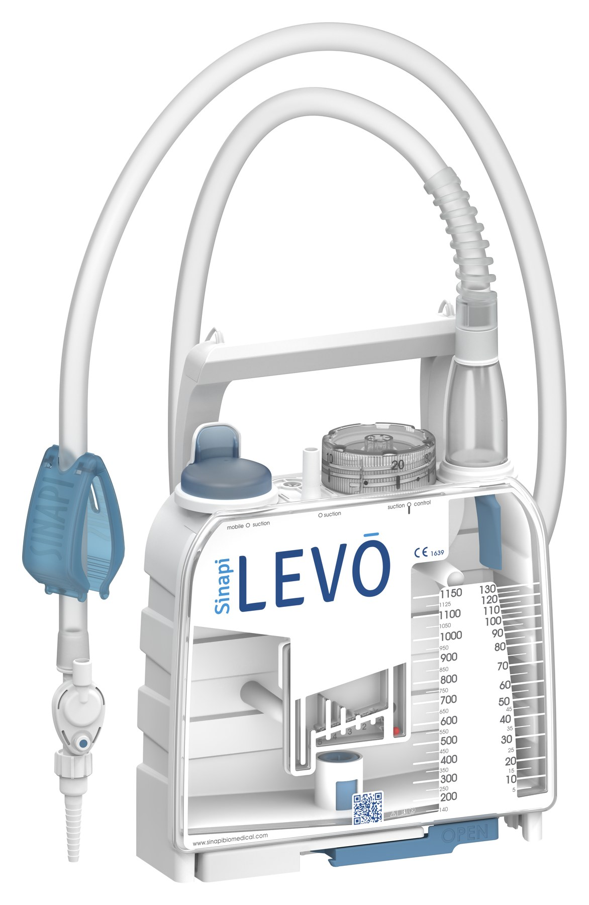
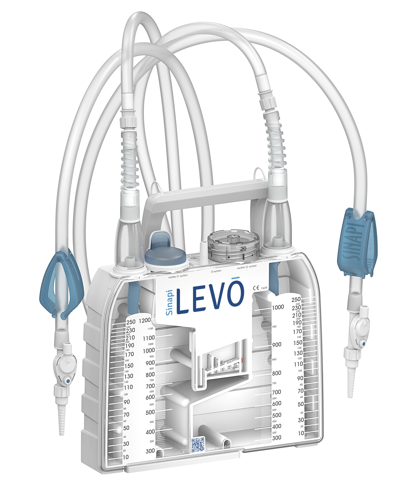
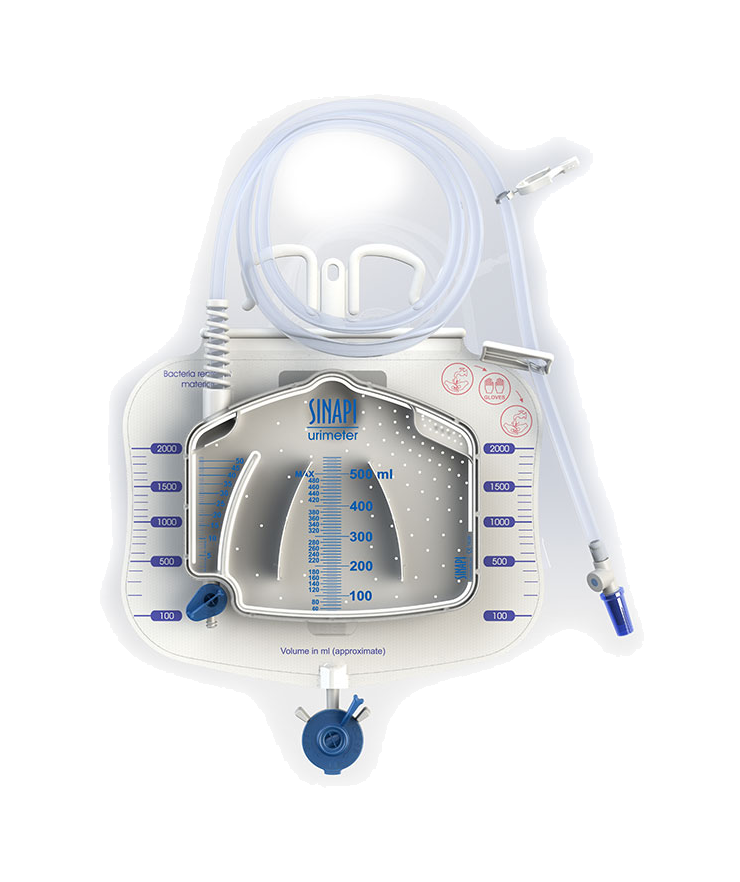
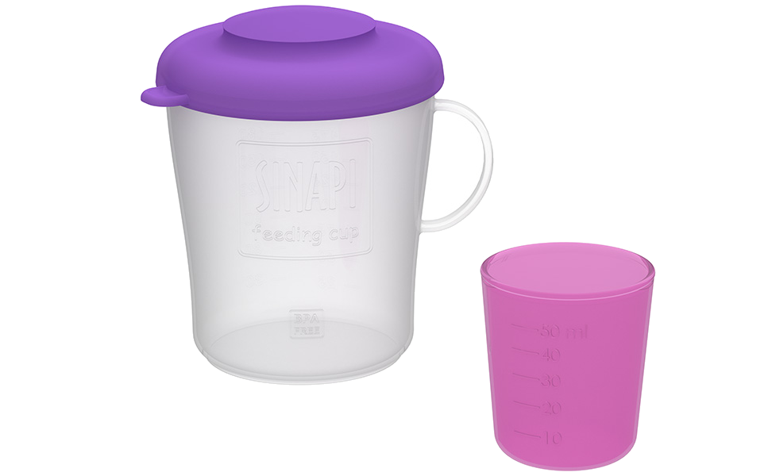
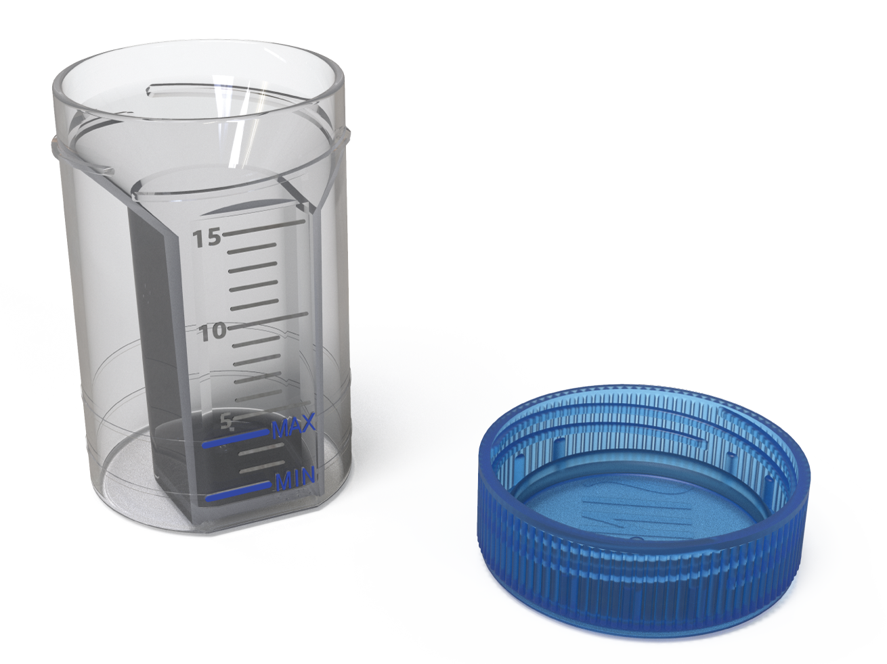
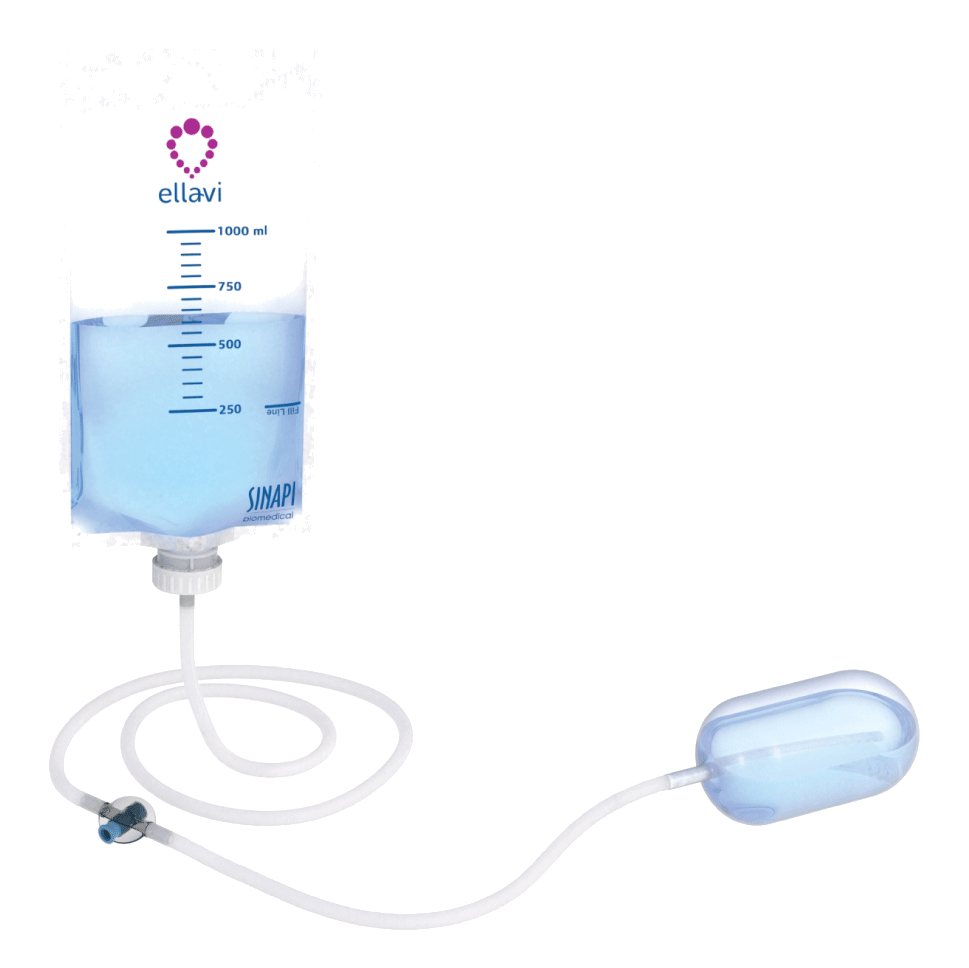

Ambulatory / outpatient
LEVO XS100
Компактна система для мобільного грудного дренування з градуйованою камерою до 100 мл.
Актуальні моделі LEVO для грудного дренування та окремі рішення виробника для ICU, догляду, лабораторії й материнського здоров’я.

Кожну позицію показуємо окремо — з повним зображенням, коротким призначенням і характеристиками. Точний артикул, комплектацію, наявність та реєстраційні матеріали в Україні підтверджуємо для конкретного запиту.
Моделі не об’єднані в одну картку: відмінності формату, місткості та підключення можна відкрити окремо.
Від компактної амбулаторної системи до двоканального кардіохірургічного формату.

Компактна система для мобільного грудного дренування з градуйованою камерою до 100 мл.
Система 1150 мл для кардіо- та торакальної практики з гравітаційним і активним режимами.

Версія для дорослих і педіатричних пацієнтів з окремою шкалою малих об’ємів.

Кардіохірургічна система до 2200 мл з сухим регулюванням аспірації та змінною каністрою.

Двоканальна конфігурація для двох катетерів і роздільного обліку дренажу.
Вироби для інтенсивної терапії, годування, лабораторної роботи та акушерської практики.

Система для візуального контролю діурезу з жорсткою вимірювальною камерою та портом відбору проб.

Багаторазовий комплект із великої та малої чашок для підготовки й контрольованого годування.

Прозорий контейнер із кришкою для організованого забору та передачі зразка мокротиння.

Система балонної тампонади матки для професійного застосування при рефрактерній післяпологовій кровотечі внаслідок атонії матки.
Технічні характеристики, комплектацію, наявність і реєстраційні документи підтверджуємо для конкретного артикула. Інформація на сторінці не замінює офіційну інструкцію виробника.
Вкажіть клінічний сценарій або наявний артикул — підготуємо відмінності конфігурацій і перелік доступних документів.
Компактна система грудного дренування для мобільного або амбулаторного сценарію.
Комплектацію та актуальну інструкцію звіряємо за артикулом.
Запросити XS100Система для відведення повітря та рідини у кардіо- й торакальній практиці.
Остаточні параметри визначає актуальна IFU конкретного артикула.
Запросити XL1150SCКонфігурація для дорослих і педіатричних пацієнтів з деталізованою шкалою малих об’ємів.
Пацієнтський сценарій і обмеження застосування звіряються з IFU.
Запросити XL1150SCiСистема великої місткості для кардіохірургічного післяопераційного дренування.
Склад системи та витратні компоненти підтверджуємо окремо.
Запросити XL2200SДвоканальна кардіохірургічна система для підключення двох катетерів.
Точні шкали й порядок роботи визначає інструкція виробника.
Запросити XL2200SDВимірювальна система для спостереження за діурезом у відділеннях інтенсивної терапії.
Комплектація та сумісність підтверджуються для конкретної позиції.
Запросити SUM500V2Комплект для підготовки суміші, зберігання та годування з чашки відповідно до протоколу закладу.
Методи очищення й годування визначаються офіційними матеріалами та локальним протоколом.
Запросити Feeding CupКонтейнер для організованого забору зразка мокротиння та передачі до лабораторії.
Забір, маркування, зберігання та передача зразка виконуються за протоколом закладу.
Запросити Specimen CupСистема балонної тампонади матки для підготовленого персоналу при рефрактерній післяпологовій кровотечі, пов’язаній з атонією матки.
Показання, протипоказання та тривалість застосування визначає виключно офіційна IFU.
Запросити Ellavi UBT